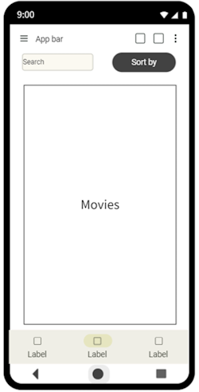

Проєкт
З кожним днем кінематограф розвивається все швидше і швидше: бюджети збільшуються, з’являються нові режисери та продюсери, поповнюються ряди відомих акторів. Завдяки таким тенденціям кожного сезону створюється дуже велика кількість контенту. В таких умовах черговому споживачу стає дуже важко тримати всю цю інформацію в голові, він вже може не пам’ятати які фільми він дивився, які планував, не кажучи вже про фільми, які дивились ваші друзі або знайомі чи їх враження про певну кінострічку. Дуже зручно, коли з усіма цими задачами тоді може допомогти один додаток на телефон. Саме тому розробка мобільного додатку з бібліотекою фільмів стає актуальною потребою для любителів фільмів та серіалів. Ця робота присвячена аналізу та розробці інтуїтивного та функціонального мобільного додатку , який надає можливість користувачам знайти фільм, який він вже дивився, або підібрати за своїм смаком той, який забажає побачити в майбутньому та додати їх до власних кінотек переглянутого за запланованого, також користувач зможе ділитися оцінками фільмів з друзями та дізнаватися їхні враження від перегляду, додаток має стати цінним помічником для кожного, хто любить кіно. Темою роботи є «Інформаційна система бібліотеки фільмів». Кінцевим результатом повинен бути зручний додаток, яким користувач захоче користуватися на регулярній основі. Для розробки мобільного додатку було визначено та сплановано використання сучасних технологій та підходів. Основною мовою програмування було обрано Kotlin оскільки вона є лідером у сфері розробки під android, який в свою чергу є найбільш популярною операційною системою для смартфонів. Також будуть використовуватися такі технології як jetpack, kotlinx, firebase, viewmodel та інші інструменти, які допомагають при роботі з дизайном, взаємодією з базами даних, багатопоточністю, аутентифікацією та роботою з життєвими циклами додатка.
Основні завдання
- Мобільний додаток
- Android
- Firebase
- Kotlin
- Бібліотека фільмів
Мета дослідження
Розробка мобільного додатку, що допоможе користувачам вести свої списки переглянутих та запланованих фільмів, лишати свої відгуки до фільмів а також переглядати списки своїх друзів
Основні завдання
- Аналіз аналогічних рішень
- Розробка архітектури додатку
- Імплементація функціоналу
- Тестування та оптимізація
- Оцінка користувацького досвіду
Очікувані результати
Отримати функціональний мобільний додаток, в якому авторизований користувач може зайти в бібліотеку, обрати фільм та додати його до списку переглянутих/запланованих. Також є можливість перейти на особисту сторінку інших користувачів та переглянути їх колекції фільмів
Контакти
Email: tymofii.krasko@student.sumdu.edu.ua